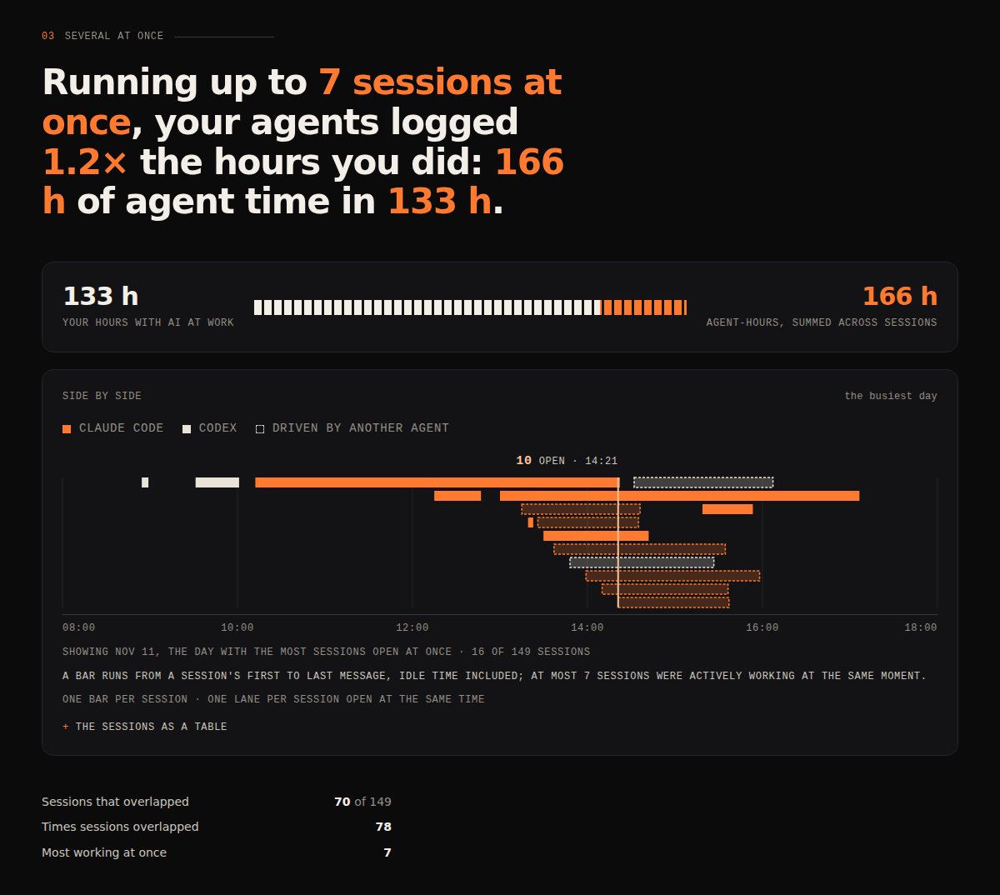
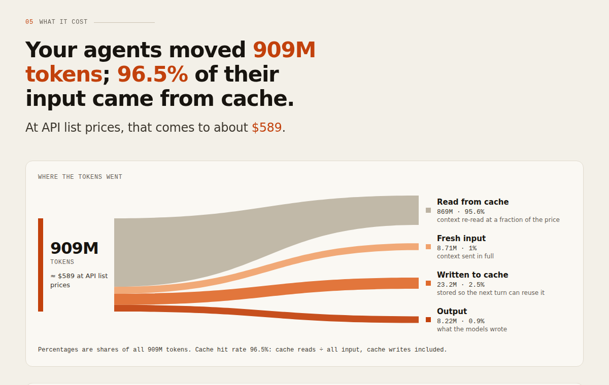
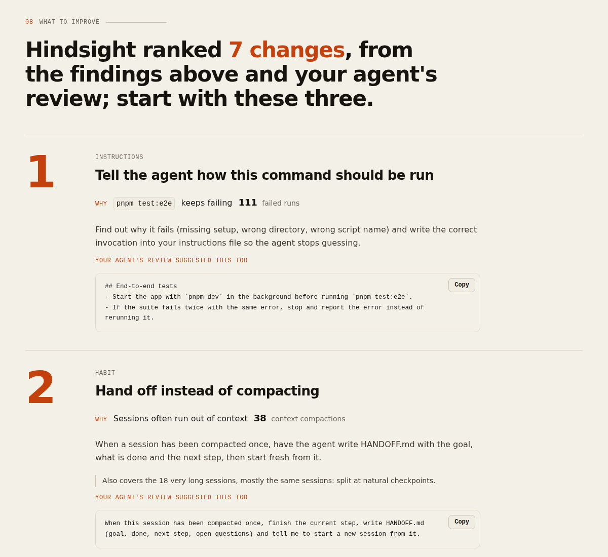

Your sessions, side by side
A timeline of your busiest day shows how many agents you really ran at once, which tool each one was in, and which ones another agent was driving.
Local insights for AI coding agents
Hindsight reads your Claude Code and Codex history and turns it into a private report: where your time and tokens go, what keeps going wrong, and specific changes to try. Nothing leaves your machine.
No network callsNo telemetryOpen source, MIT
What the report shows
A timeline of your busiest day shows how many agents you really ran at once, which tool each one was in, and which ones another agent was driving.

Tokens split into cache reads, fresh input, cache writes and output, with an estimate at API list prices and the share that has no known price.

Each finding comes with evidence from your sessions and a concrete change: a line for CLAUDE.md or AGENTS.md, an allow rule, a habit to try.

How it works
Hindsight parses your Claude Code and Codex transcripts into numbers: sessions, tokens, tool calls, errors, lines changed. It finds patterns with evidence you can check, such as a command that failed six times in a row. No model is involved, so the same history gives the same result.
The hindsight skill has the agent you already use read short, redacted excerpts and label each session with a fixed taxonomy: goal, outcome, friction, what went well. Hindsight never calls a model API itself.
Both layers become one self-contained HTML file on your disk: how you work, what it cost, where time is lost, and a ranked list of changes. It loads nothing from the network.
Install
Hindsight reads Claude Code and Codex history today. Node.js 20 or newer is needed.
/plugin marketplace add hamedmp/hindsight
/plugin install hindsight@hindsightcodex plugin marketplace add hamedmp/hindsight
codex plugin add hindsight@hindsightThen open a new session and ask your agent to run hindsight. For other agents, or to install into several at once, see the install guide in the README.
Privacy
Hindsight has no telemetry and makes no network requests. The report is one HTML file on your disk and loads nothing from the network.
The analysis runs in the agent you already use, under your existing account and settings. Hindsight never calls a model API.
Common secret formats (API keys, bearer tokens, private keys, PASSWORD= assignments) are removed from prompts, commands and excerpts before they are stored or shown. Redaction is pattern-based, so an unusual secret can slip through.
Hindsight keeps numbers and the prompts you typed. It does not store your agent's replies or tool output. What it writes goes to ~/.hindsight/, readable only by you.